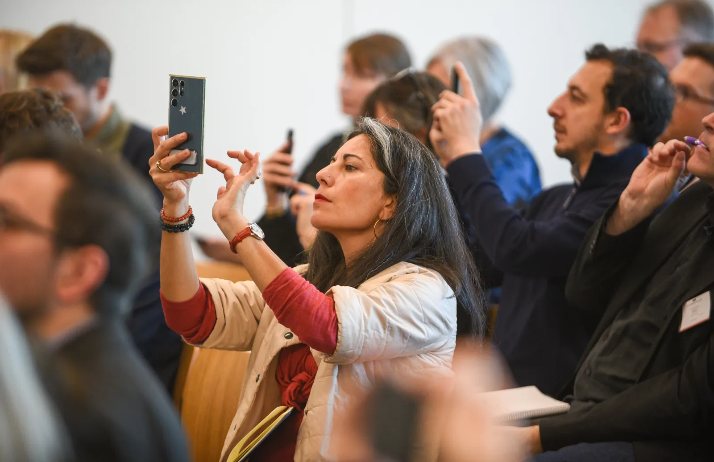

Driven by vision and experience.
We are an international growth and storytelling partner for food, ingredient and purpose-led brands. We help businesses analyse and interpret new markets, build the right connections, and grow across Europe with clarity and direction.
Your product is only the starting point. Growth comes from understanding the world around it.
With 25+ years across international marketing, branding and business development, and 10+ years covering the global food and ingredients ecosystem as a B2B journalist, we understand both the market and the people behind it. We combine sector insight, commercial thinking and an international network, bringing in trusted European specialists when deeper expertise is needed. This approach has shaped projects with companies across ingredients, food, foodservice, fresh produce, sustainability and premium natural cosmetics.
When specialist expertise is required, we bring together trusted European partners in nutrition, science, regulation, claims and certifications.
Analyse. Adapt. Connect. Activate.
Analyse
Read the market before moving: categories, people, culture and the rules of the game.
Adapt
Keep your identity and make your story relevant where you land.
Connect
Find the partners and buyers that matter, and be visible where they are.
Activate
Turn insight into experiences, meetings and commercial momentum.

Claudia Vasquez Alarcón
Journalist, B2B marketer and international consultant. Her profile is unusual, and that is what makes it useful: the ability to find stories (journalism), the ability to sell them (B2B marketing) and a sector she knows inside out (food and ingredients).
Read her story¡Vamos!
Tell us where you want to grow next. We'll tell you honestly where we can help.
Start a conversation